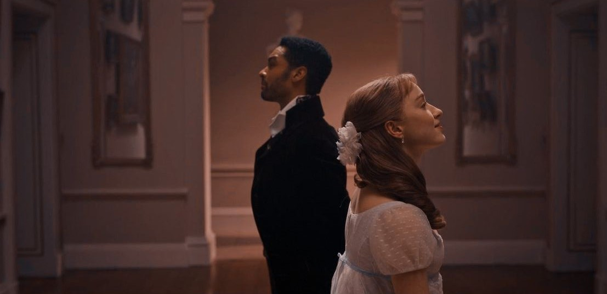
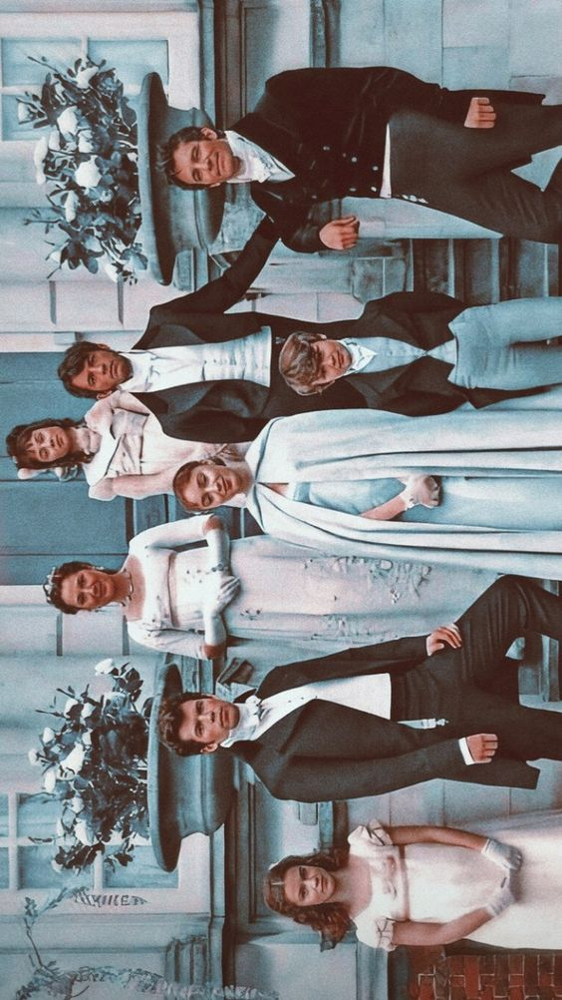

Bridgerton, baseada na série literária Os Bridgertons da autora Julia Quinn, é um verdadeiro deleite para os amantes de romances de época. Ambientada no século XIX, em Londres, ela nos transporta para a alta sociedade da época, repleta de bailes suntuosos, vestidos deslumbrantes e intrigas palacianas.
Acompanhamos a família Bridgerton, composta por oito irmãos, cada um com suas próprias ambições, segredos e desejos. Daphne Bridgerton, a primogênita, busca um casamento por amor, mas acaba envolvida em um escândalo que pode mudar sua vida para sempre.
O Duque Simon Basset, um solteiro convicto, cruza o caminho de Daphne e a atração entre eles é inegável. O romance entre os dois é repleto de paixão, obstáculos e reviravoltas, tornando-se o coração da primeira temporada.
Além dos protagonistas, somos apresentados a personagens cativantes como Anthony Bridgerton, o irmão mais velho, e Lady Whistledown, a misteriosa colunista de fofocas que mantém a alta sociedade em suspense.
A série também aborda questões como autonomia feminina, casamentos arranjados e o papel das mulheres na sociedade da época. Eloise Bridgerton, por exemplo, questiona o sistema e se envolve em investigações para desvendar a identidade de Lady Whistledown.
Com cenários luxuosos, figurinos impecáveis e uma trilha sonora que mistura clássicos e músicas atuais, Bridgerton é uma viagem encantadora ao passado, onde o amor e o desejo se entrelaçam em meio a bailes e intrigas.
Prepare-se para mergulhar nesse mundo de luxo, escândalos e amores proibidos. Bridgerton é uma série que nos envolve e nos faz suspirar a cada episódio.